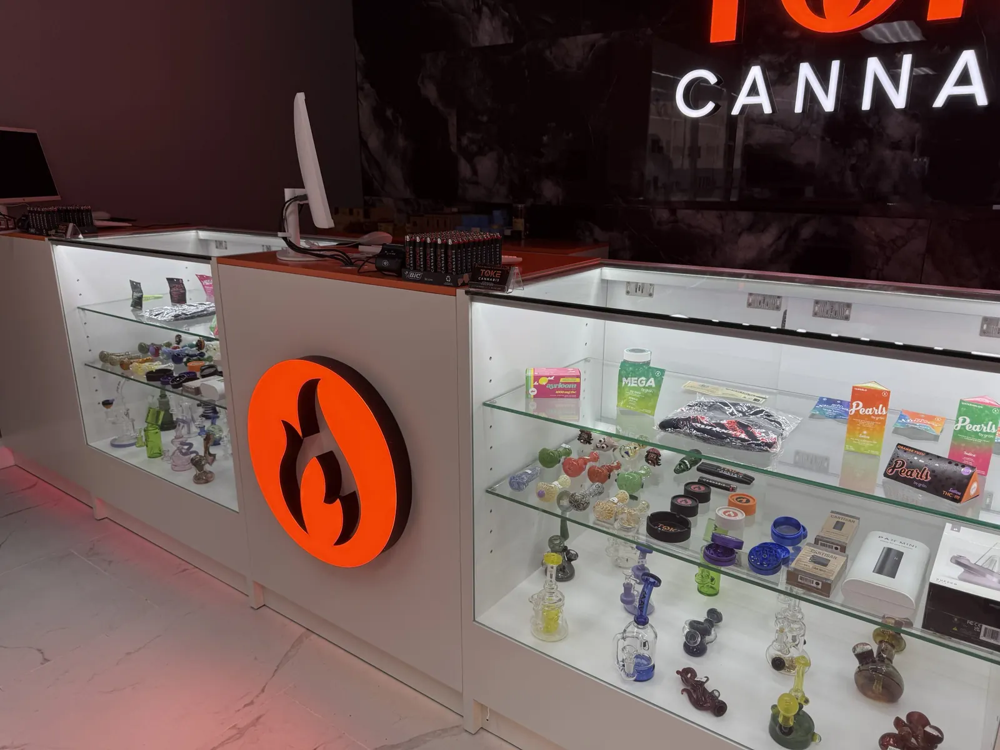

Learn · 3 min read
From Seed to Shelf: How Legal Cannabis Gets to a Dispensary in New York
One of the most common questions we hear at Toke Cannabis, especially from first-time shoppers, tourists, or people new to New York cannabis, goes something like this:
“So… where does this actually come from?”
Sometimes followed by:
- “Is this grown here?”
- “How many hands does this go through?”
- “How do you know this stuff is legit?”
Totally fair questions. And honestly, New York’s legal cannabis process is way more involved than most people realize.
So here’s the exact seed-to-shelf explanation we give customers every day at Toke New York, especially in Yonkers and Spring Valley.
Step 1: It Starts With Licensed New York Growers

Legal cannabis in New York doesn’t start in a warehouse somewhere out of state.
It starts with licensed New York cultivators who are approved by the state to grow cannabis under strict rules.
That means:
- Regulated growing conditions
- State oversight
- Trackable plants from day one
Every plant grown for sale at Toke Cannabis begins its life inside New York’s legal system, not the grey market.
Step 2: Harvesting & Processing (Still Regulated)

After harvest, cannabis doesn’t just get tossed into a bag and shipped out.
It goes to licensed processors, who are responsible for:
- Drying and curing flower
- Turning cannabis into edibles, vapes, or concentrates
- Properly packaging and labeling products
This is where a lot of people in Yonkers and Spring Valley say:
“Wow, I didn’t realize there were that many steps.”
Yep, and we’re still not done.
Step 3: Mandatory Lab Testing (No Skipping This)

Before anything can be sold at Toke New York, it must pass state-required lab testing.
That testing checks for:
- Accurate THC levels
- Mold and mildew
- Pesticides
- Heavy metals
- Residual solvents
If it fails?
It doesn’t move forward. Period.
That’s why everything you see at Toke Cannabis is clearly labeled, traceable, and verified.
Step 4: State Tracking (Yes, New York Watches It All)

Here’s a part people don’t expect:
New York uses a track-and-trace system that follows cannabis from seed to shelf.
Every product has:
- A batch number
- A digital paper trail
- A verified path from grower → processor → distributor → dispensary
By the time something lands at Toke Cannabis in Yonkers or Spring Valley, the state already knows where it’s been.
Step 5: Delivery to a Licensed Dispensary (Like Toke)

Only licensed distributors can transport cannabis to dispensaries.
That means:
- Secure transport
- Logged deliveries
- No side routes, no shortcuts
Once it arrives at Toke New York, our job is to:
- Verify documentation
- Confirm lab results
- Store products properly
- Make sure everything matches state compliance
If something doesn’t check out, it doesn’t hit the shelf.
“So… Why Does This Matter to Me?”

This is usually where the conversation lands at Toke Cannabis.
Here’s why seed-to-shelf matters:
- You know what you’re buying
- You know where it came from
- You know it was tested and approved
- You’re not guessing about strength or testing
For customers in Yonkers and Spring Valley, especially those easing into legal cannabis, that transparency builds real comfort.
Why Toke Takes This Seriously

We don’t expect customers to memorize New York cannabis law.
That’s our job.
At Toke Cannabis, being seed-to-shelf compliant isn’t about checking boxes, it’s about trust.
When you shop with Toke New York, whether in-store or online at Toke Cannabis, you’re buying from a dispensary that knows:
- Where each product came from
- How it was handled
- Why it’s on the shelf
And if you ever want us to walk you through that process in real time, just ask. That’s how these conversations usually start anyway.
The Bottom Line

Legal cannabis in New York doesn’t appear out of nowhere.
It’s grown, tested, tracked, transported, and verified, step by step, before it ever reaches Toke Cannabis.
That’s not hype.
That’s how New York does it.
And it’s why customers in Yonkers and Spring Valley keep coming back to Toke New York when they want cannabis they can actually feel good about buying.
Keep reading
More from the blog

How to Choose What’s Right for You (Especially If It’s Your First Time)
If you’ve ever walked into Toke Cannabis in Yonkers or Spring Valley, New York and said, “Okay… I have no idea where to start,” you’re not behind…
The First-Timer’s Guide to Buying Cannabis in New York
If you’ve never walked into a licensed dispensary, it’s a lot less complicated than people expect. You show your ID, you talk to a budtender, you…

What THC Percentage Actually Means
THC percentage is simply a measurement of how much THC is in a product by weight.
Two stores · open 7 days
Order tonight, pick it up in minutes
Order online for in-store pickup, curbside pickup, or delivery across Westchester and Rockland. Free delivery on orders of $75 or more.